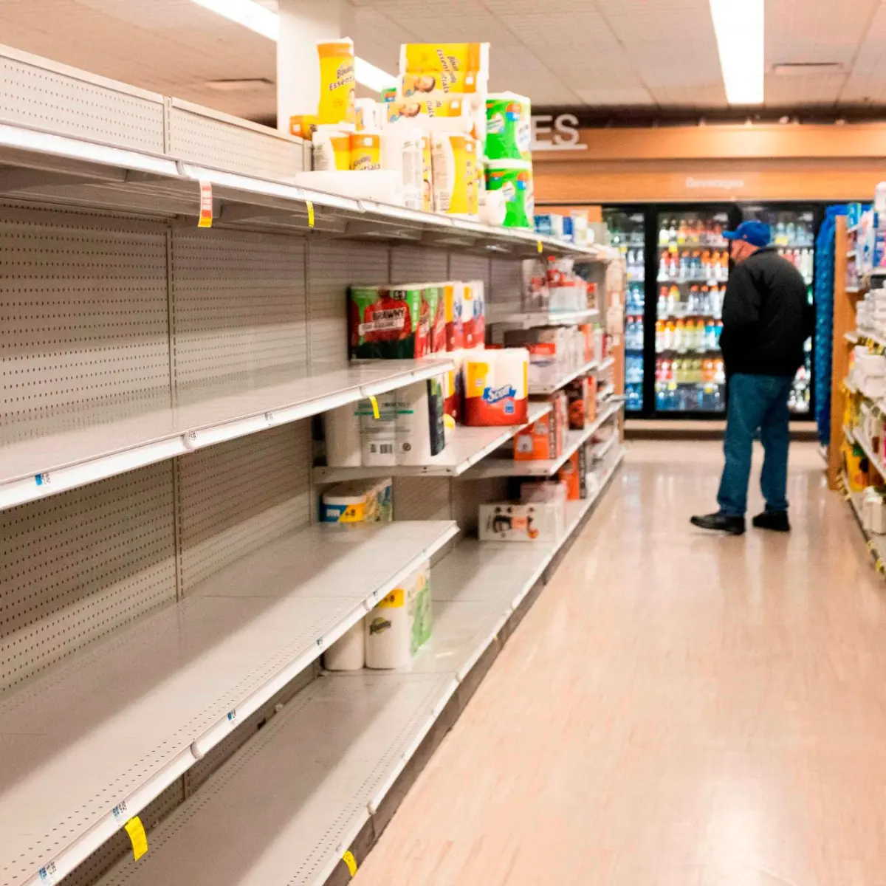

E se o campo parasse?
O agronegócio está presente na alimentação, nas roupas, nos combustíveis e em diversos produtos do nosso dia a dia. Mas o que aconteceria se ele deixasse de existir?
Você Sabia?
O agro produz alimentos, fibras e matérias-primas. Grande parte dos alimentos vem do campo. O transporte também depende da produção agrícola. Muitos empregos estão ligados ao agronegócio.

Dia 1
Nos primeiros dias sem o agro, a população começaria a comprar mais alimentos do que o normal. Produtos frescos como leite, frutas e verduras começariam a faltar.

Dia 7
Após uma semana, os estoques dos supermercados estariam reduzidos. Muitos alimentos ficariam mais caros devido à escassez.

Dia 30
Um mês sem o agro. Os estoques de supermercados estão quase esgotados. Frutas, verduras, leite, ovos e carnes tornaram-se raros. Os preços dos alimentos dispararam e muitas famílias já enfrentam dificuldades para encontrar produtos básicos.

Dia 90
Três meses sem o agro. O país enfrenta uma grave crise de abastecimento. Alimentos, combustíveis, medicamentos e diversos produtos do dia a dia estão em falta. A economia desacelera, o desemprego aumenta e a população sente os impactos da ausência do campo em todos os setores da sociedade.